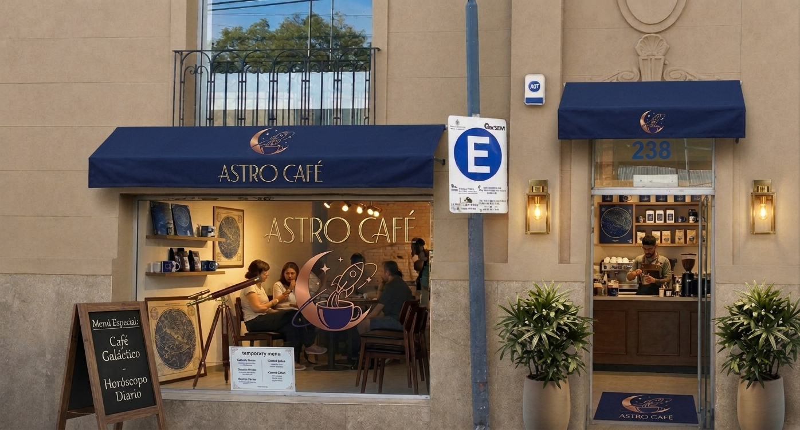
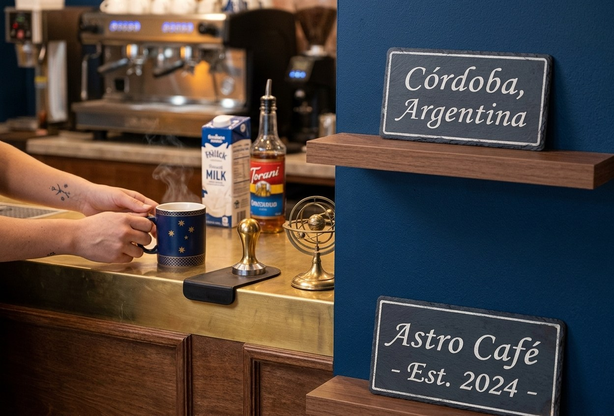

Nuevo horario de verano
Desde el 1 de diciembre extendemos el horario hasta las 22 h de jueves a sábado, para que disfrutes del café bajo las estrellas.
Astro Café
Estamos en pleno centro de Córdoba, a pocas cuadras de la plaza San Martín. Buscá el toldo azul con la luna dorada.

Independencia 355, Córdoba Capital, Argentina
Desde el 1 de diciembre extendemos el horario hasta las 22 h de jueves a sábado, para que disfrutes del café bajo las estrellas.
